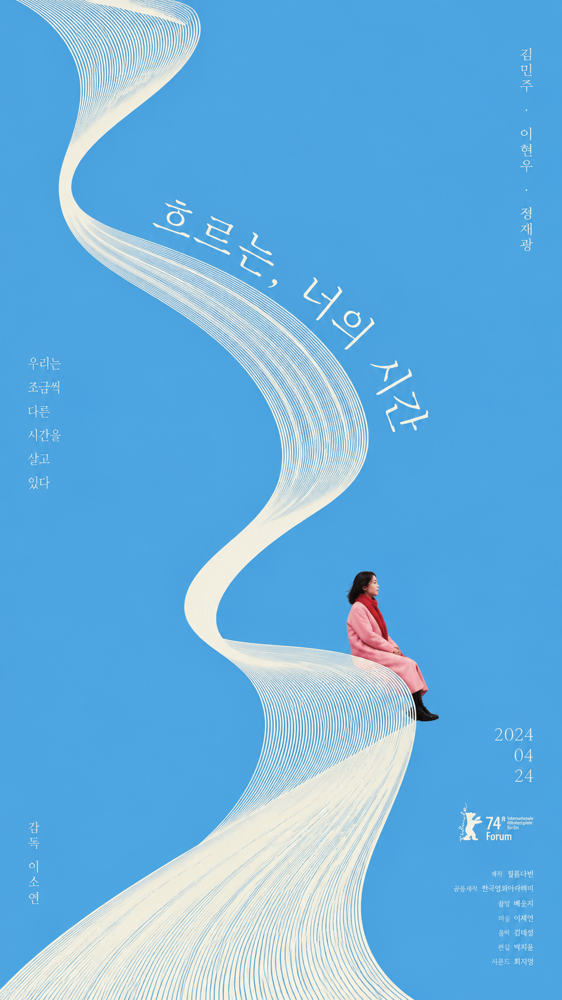
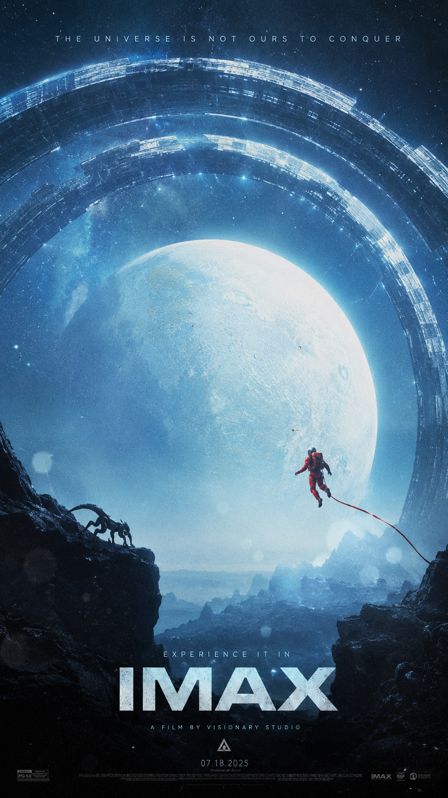
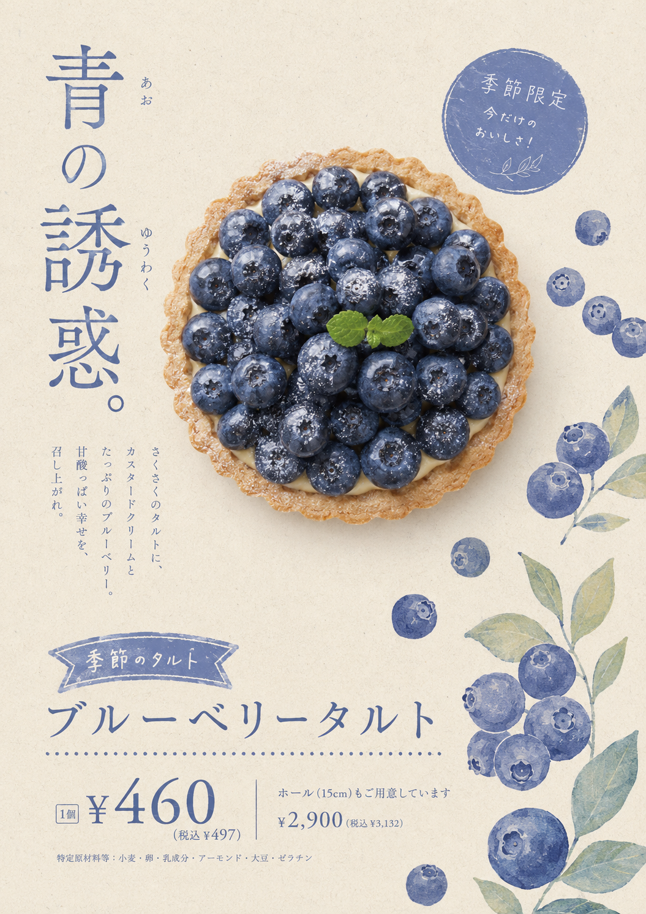
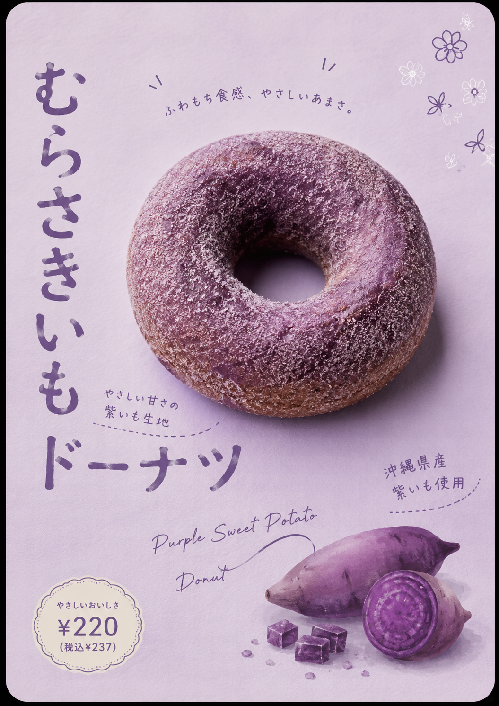
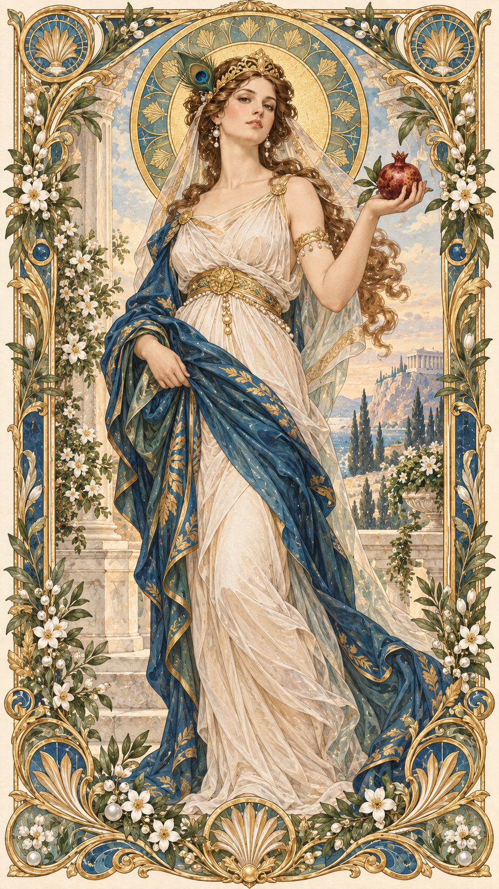
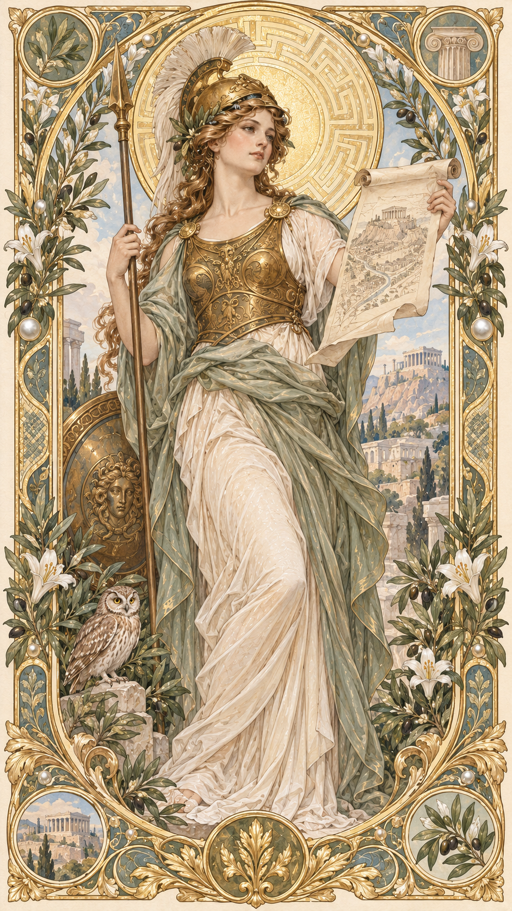
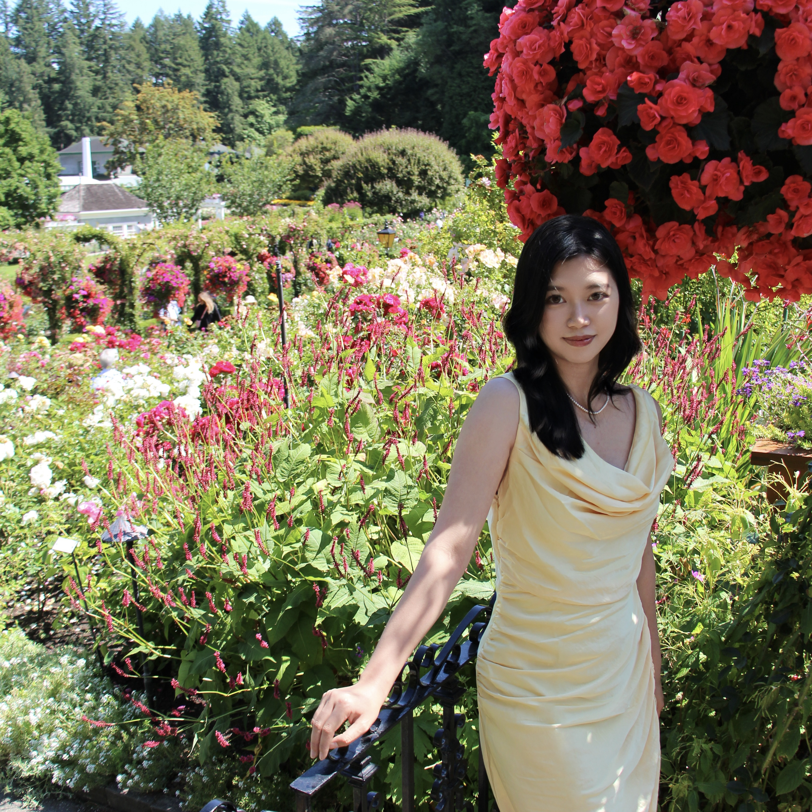

Film Poster Series
An AI-assisted exploration of cinematic composition, atmosphere, type hierarchy, and visual storytelling across two imagined films.
Toronto-based AI Product Designer turning complex AI workflows into clear, controllable human experiences.
Master of Information — UX Design, University of Toronto
I’m Lucy — an AI Product Designer who turns complex workflows into clear, controllable, and trustworthy human experiences.
Always in progress
A working lab for AI-assisted products, prototypes, and visual systems—where I learn by making, testing, and iterating in public.


An AI-assisted exploration of cinematic composition, atmosphere, type hierarchy, and visual storytelling across two imagined films.


A seven-poster study in food photography, Japanese editorial composition, color systems, and AI-assisted visual direction.


A six-piece AI-assisted illustration series reimagining Olympian goddesses through gilded ornament, symbolic attributes, and contemporary portrait composition.
AI Art Direction · Film Posters
Poster Design · 2026
AI Illustration · Mythology Series
赫拉 Hera
Selected disciplines
A wider view of how I make—from responsive interfaces to printed matter and physical form. Hover to preview, then open a category to explore the work.
My Process
Understand the real system, frame the right problem, make decisions visible, and validate before assuming.

A Little More About Me
Outside product work, I sew, crochet, bake, read mystery novels, travel, and photograph small moments that make me stop and look.
Meet the person behind the workOpen to Product Design and UX Design opportunities.